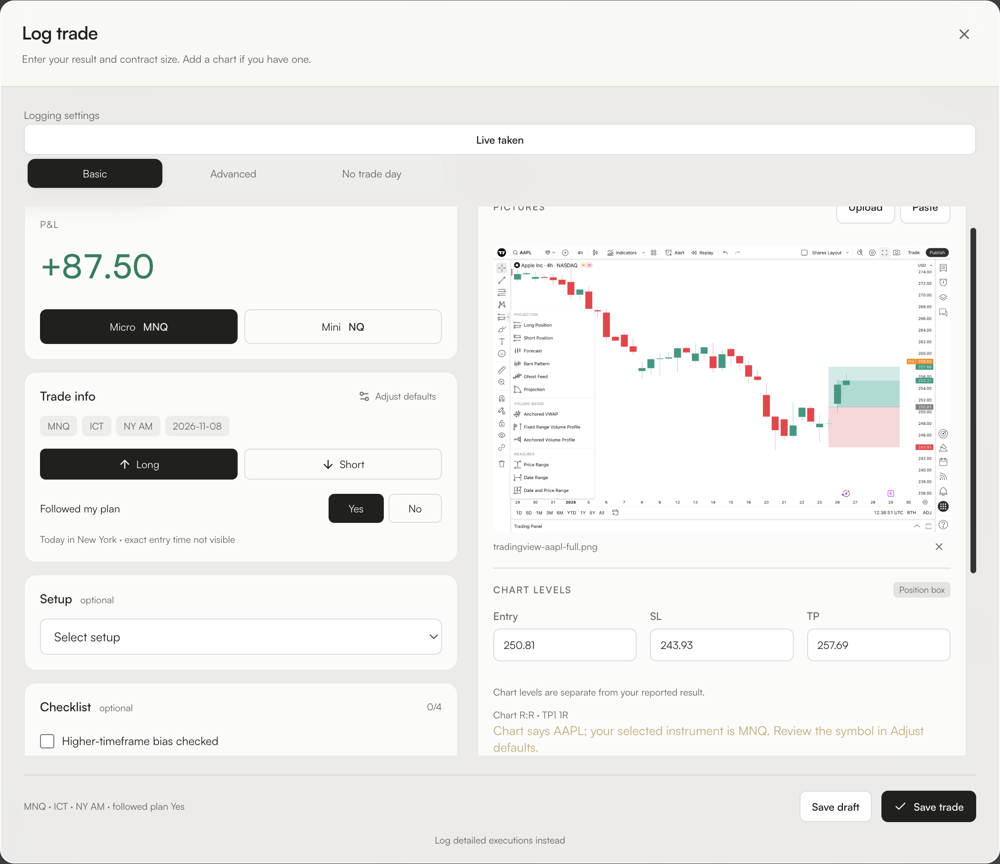
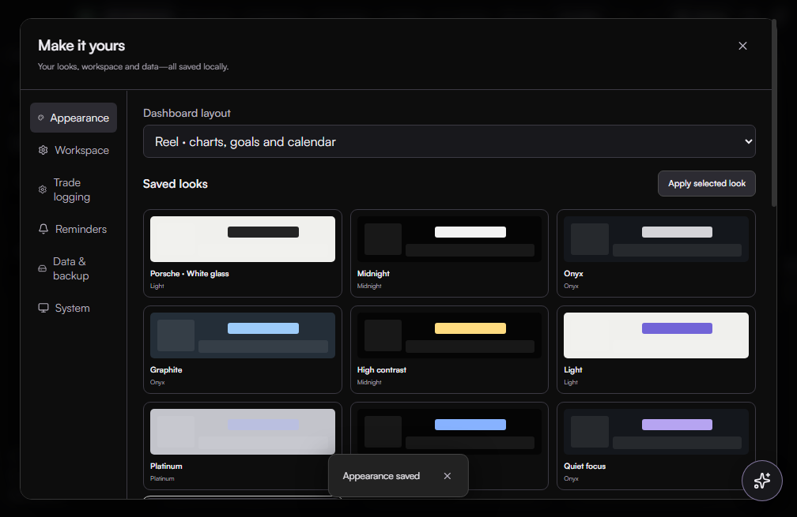
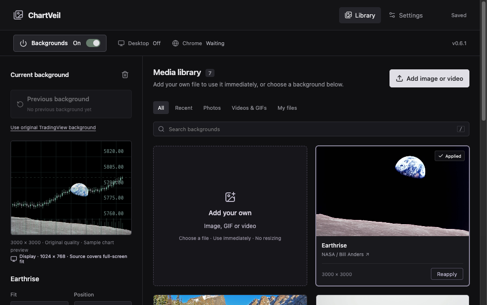

Journal + ChartVeil
App guide
Install first using the Mac guide or Windows guide. Open the question-mark button inside Journal for shortcuts to these screens.
1. Log a trade
- Select Live taken or Backtesting. Journal remembers your last selection.
- Choose New trade, enter signed net P&L, and choose Micro or Mini. MNQ, ICT, NY AM and Followed plan default to your saved settings.
- Optionally add setup, notes, checklist, or a full chart screenshot. Review detected entry, stop and target. If a chart label is unclear, you can enter it yourself or leave it blank.
- Choose Save trade. Open the saved trade from Journal to review it.


2. Ask Coach, then follow up
Open Coach, leave the built-in model selected and send a message. Its first reply can take longer while the model loads. Continue in that same conversation to refer to earlier messages, or choose Read aloud beneath a reply. Use Daily & weekly for a review based on the saved trades in the selected week.

3. Set your look and defaults
Open Settings → Appearance for Obsidian, Graphite, High contrast, background and text options. Choose a preset and select Apply selected look. Use Settings → Trade logging to edit your checklist and defaults.

4. Set up ChartVeil
Open ChartVeil, choose a photo or import an image or video, then select Apply. Adjust fit, opacity or position from the preview panel. Use Backgrounds Off to restore the chart's original look.
Chrome. In ChartVeil, choose Settings → Open extension folder. In Chrome’s Extensions page, enable Developer mode and choose Load unpacked. Select that folder, then open a TradingView chart. This optional connection is set up once per browser profile.
TradingView Desktop. Turn on Automatic TradingView backgrounds in ChartVeil. Mac uses an in-app connection prompt. Windows Desktop background replacement requires the optional local connection. Use Chrome for the guided setup on Windows.

Send tester feedback
Include your app, operating system, what you clicked, and what happened. Remove private account or trade details from any screenshot.